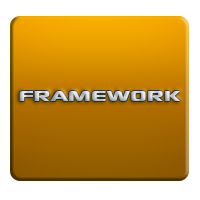

Un framework de CSS es una biblioteca de estilos genéricos que puede ser usada para implementar diseños web. Aportan una serie de utilidades que pueden ser aprovechadas frecuentemente en los distintos diseños web.

Podemos clasificar los frameworks de css en dos tipos:
- Multipropósito: Proporcionan un conjunto de utilidades variadas útiles para distintos
aspectos del desarrollo de un diseño web. Ej Cascade Framework.
- Propósito específico: Están orientados a proporcionar herramientas para un propósito
determinado. Por ejemplo, hay frameworks de CSS orientados a proporcionar herramientas para
el desarrollo de rejillas